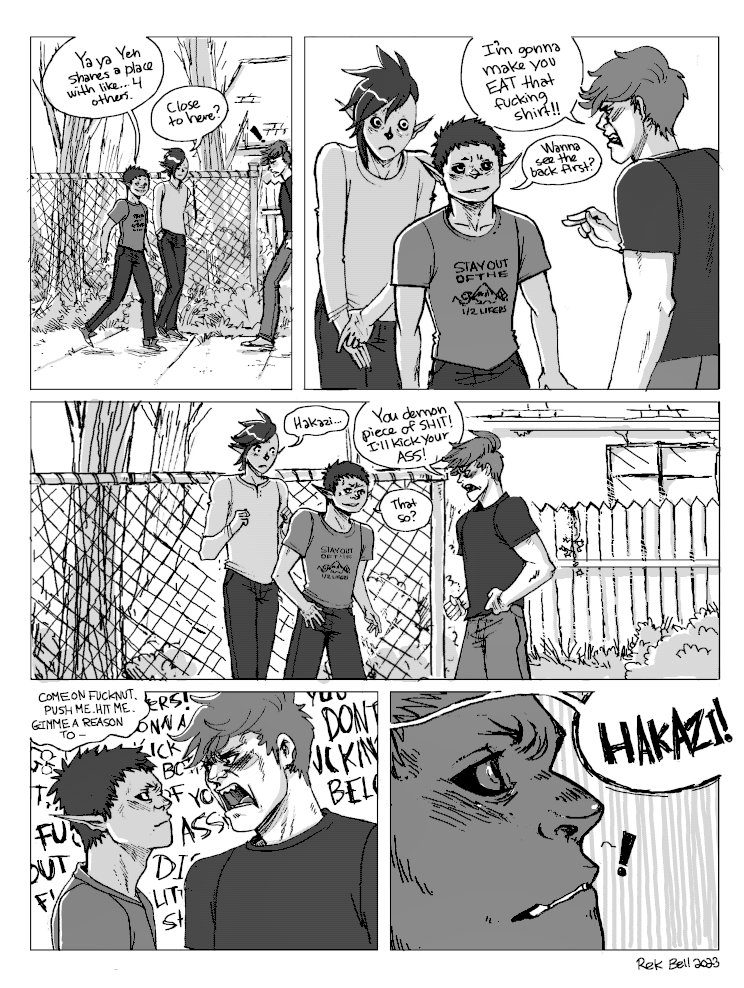
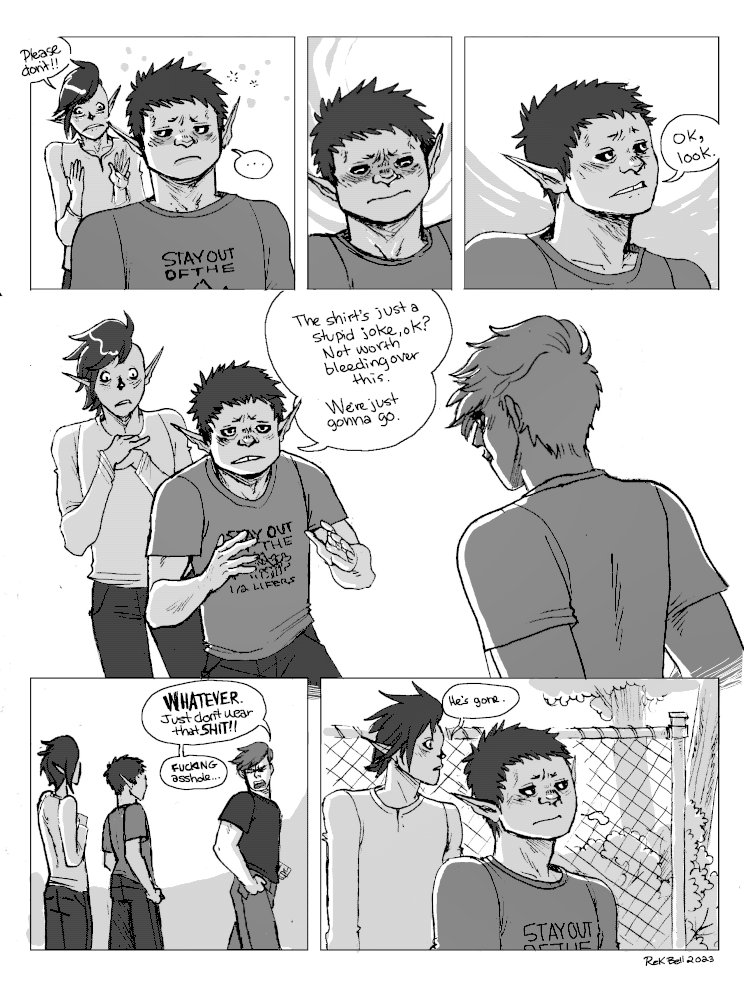
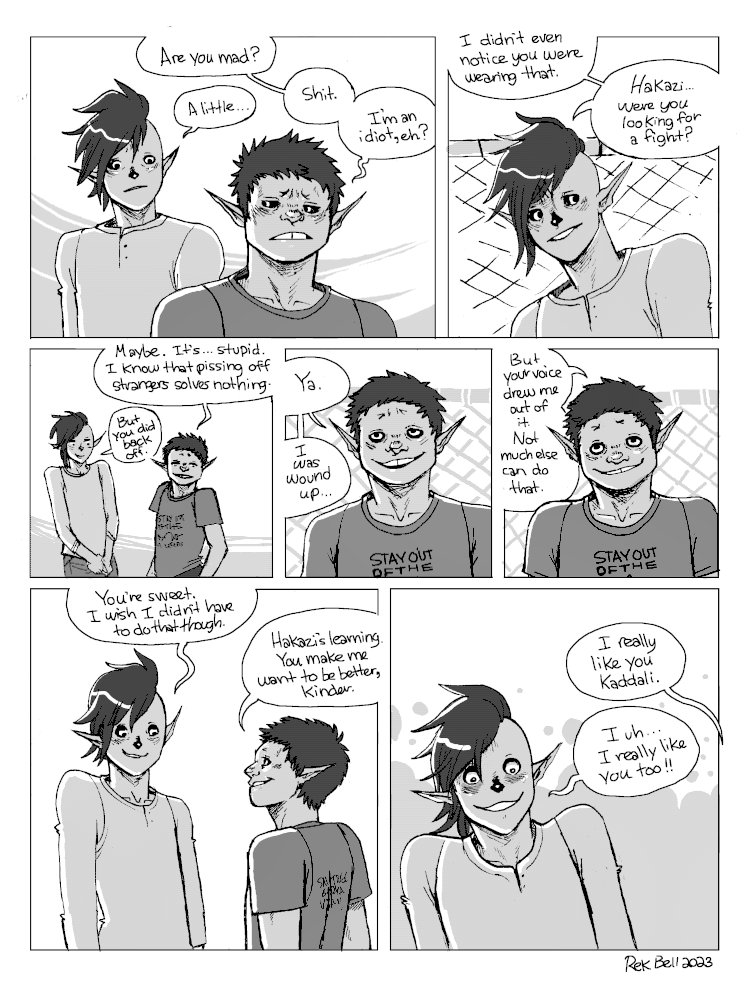

About
About Projects
Projects Books
Books Games
Games Stories
Stories Store
Store Collection
Collection Notes
NotesDisengaging
Context. This is during a time before the solomons devils existed, not too long after Kaddali and Hazaki met at a protest against a development project in the Taiga. "Half-lifers", or "Near-deads", are common insults used by hegatas, used towards humans to refer to the fact that they live very short lives.
I will add sequences that precede and follow this one soon.
Content Warning. Some swearing.
  
Go back to the hakum main page.